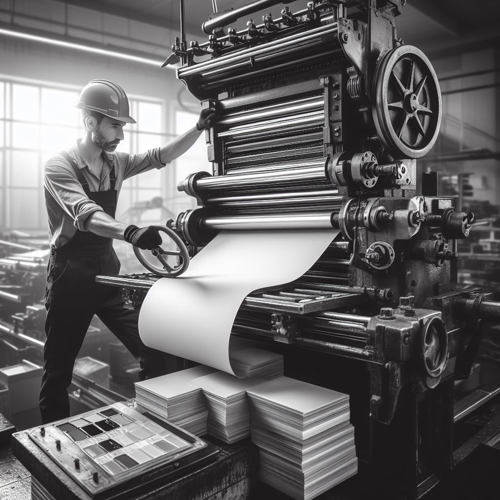
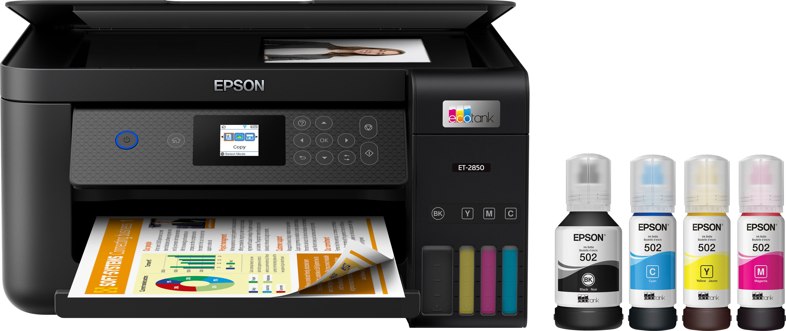
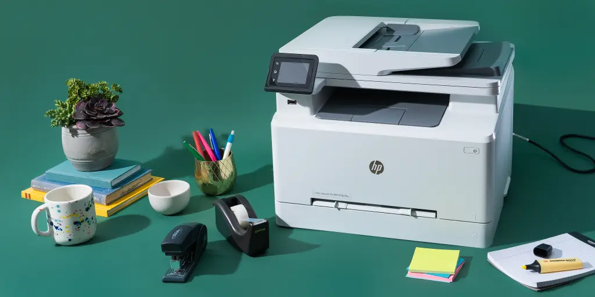

Introduction To The Evolution Of Printers
The evolution of printers has been a fascinating journey that spans several centuries, transforming from simple manual devices to sophisticated, high-speed, and multifunctional machines we use today.
 · Prajol Bimali · 7th jan 2024
· Prajol Bimali · 7th jan 2024
The evolution of printers spans centuries, commencing with Johannes Gutenberg's revolutionary printing press in the 15th century. Mechanical printers, such as steam-powered presses, dominated the 19th century, paving the way for increased speed and efficiency. The 20th century witnessed the rise of laser printers and later inkjet printers, bringing high-quality and color printing to homes and offices.
The 21st century introduced multifunctional printers, combining various capabilities in a single device. Wireless and cloud printing emerged, allowing for seamless connectivity and remote access.
This ongoing narrative continues to unfold, promising further advancements that will shape the future of printing technology and its integration into our increasingly digital world. As technology continues to advance, printers evolve to meet the demands of an ever-changing digital landscape, exemplifying a fascinating journey of innovation.
The history of printers can be divided into several key phases, each marked by significant technological advancements.
Here is a brief introduction to some of the major milestones in the history of printing and some examples of each generation of printers.
·Evolution Of Printers, According To The Hierarchy Of Invention:
1. Woodblock Printing.
2. Printing press.
3. Dot matrix printers.
4. Inkjet printers.
5. Laser printers.
6. 3D printers.
1. Woodblock Printing |
This is the earliest known form of printing, which originated in China around 2000 years ago. It involved carving a wooden block with a reversed image or text, applying ink to it, and pressing it onto paper or cloth.
Woodblock printing was mainly used for religious texts, such as the Diamond Sutra, the oldest dated printed book in the world.

It was later adopted in other parts of East Asia, including Japan and Korea. In Japan, ukiyo-e woodblock prints became particularly famous during the Edo period. Woodblock printing had a profound impact on art, literature, and culture in East Asia. It played a crucial role in the preservation and dissemination of traditional stories, religious texts, and artistic expressions.
2. Printing Press |
The printing press was invented in the mid-15th century by Johannes Gutenberg, a German inventor. Gutenberg's invention was a movable-type printing press, which allowed for the mass production of books and other printed materials. The printing press is a landmark invention that revolutionized the way information was produced and disseminated, marking a crucial turning point in the history of printing and publishing.
The key innovation was the use of movable metal type, allowing printers to rearrange letters and characters to create different texts. The movable type system consisted of individual metal letters and characters that could be arranged and rearranged on a printing press. This made it significantly faster and more efficient than earlier printing methods, such as woodblock printing, where an entire block had to be carved for each page.

In the printing press, ink was applied to the raised surfaces of movable type, which was then pressed onto paper or other materials. This process allowed for the repeated and consistent production of identical copies of a text. The ability to produce books and documents on a large scale had a profound impact on the availability of information.
The printing press democratized access to information. It empowered individuals to access literature, scientific works, and religious texts, fostering the rise of literacy and the spread of ideas. The increased availability of printed materials also contributed to the standardization of languages and the development of national identities.
3. Dot Matrix Printers |
Dot matrix printers are impact printers that produce characters and images by striking pins against an ink-soaked ribbon to form dots on paper. Dot matrix printers work on a mechanism where a printhead containing a matrix of pins (typically 9 or 24 pins) strikes an inked ribbon against the paper. The impact creates dots, and by combining these dots in various patterns, characters and graphics are formed. These are one of the first types of computer printers, which emerged in the 1960s. They used a print head that moved back and forth, striking an ink ribbon against paper to create dots that formed characters or images.
The print quality of dot matrix printers is characterized by a series of dots that form each character. While not as high in resolution as later technologies like laser or inkjet printers, dot matrix printers were suitable for many applications, including text documents and simple graphics.

The "impact" nature of dot matrix printing makes them noisy compared to non-impact printers. The distinctive sound of the pins striking the paper is a characteristic feature of dot matrix printers. This noise is a result of the mechanical impact required to transfer ink onto the paper.
With the advent of inkjet and laser printing technologies offering higher print quality and quieter operation, dot matrix printers gradually declined in popularity. However, they are still used in specific niche applications where multipart forms and impact printing are required.
4. Inkjet Printers |
These are the most common type of printers today, which work by spraying tiny droplets of ink onto paper. They were invented in the 1950s, but they became popular in the 1980s and 1990s, as they offered better quality, speed, and versatility than dot matrix printers.
Inkjet printers can print text, graphics, and photos in color or black-and-white, and they can use different types of paper, such as glossy or matte.

Inkjet printers work by expelling tiny droplets of liquid ink through a series of nozzles onto the printing surface.
The nozzles are controlled by microprocessors to form characters, images, or graphics.
Inkjet printers are known for producing high-resolution prints with sharp text and vibrant colors.
They are popular for tasks such as photo printing, document printing, and graphic design.
5. Laser Printers |
Laser printers are a type of electrostatic digital printing technology that uses a laser beam to produce high-quality text and graphics on paper. These are another common type of printers today, which use a laser beam to create an electrostatic image on a drum, which then attracts toner particles and transfers them onto paper.
They were invented in the 1960s, but they became widely available in the 1980s, as they offered faster and sharper printing than inkjet printers. Laser printers are better at printing text, but not as good at printing photos. They are also more expensive and require more maintenance than inkjet printers.

Laser printers operate by using a laser to form an electrostatic image on a photosensitive drum or belt. The electrostatically charged drum attracts toner (powdered ink), which is then transferred onto the paper and fused into place using heat.
While monochrome (black and white) laser printers are common and widely used for text documents, color laser printers are also available for those needing color prints. Color laser printers use separate toner cartridges for cyan, magenta, yellow, and black.
6. 3D Printers |
These are the latest and most innovative type of printers, which can create physical objects from digital models. They were invented in the 1980s, but they became more accessible and affordable in the 2010s, as they opened up new possibilities for design, engineering, art, and medicine.
3D printers work by depositing layers of material, such as plastic, metal, or ceramic, to form a solid object. They can print anything from toys and jewelry to prosthetics and organs.

Objects are created using digital models designed with computer-aided design (CAD) software. These digital files provide instructions for the 3D printer to layer the material and build the physical object.
Laser printers are generally robust and durable. They are designed to handle heavy workloads and are suitable for demanding printing environments.
Leave Us a comment